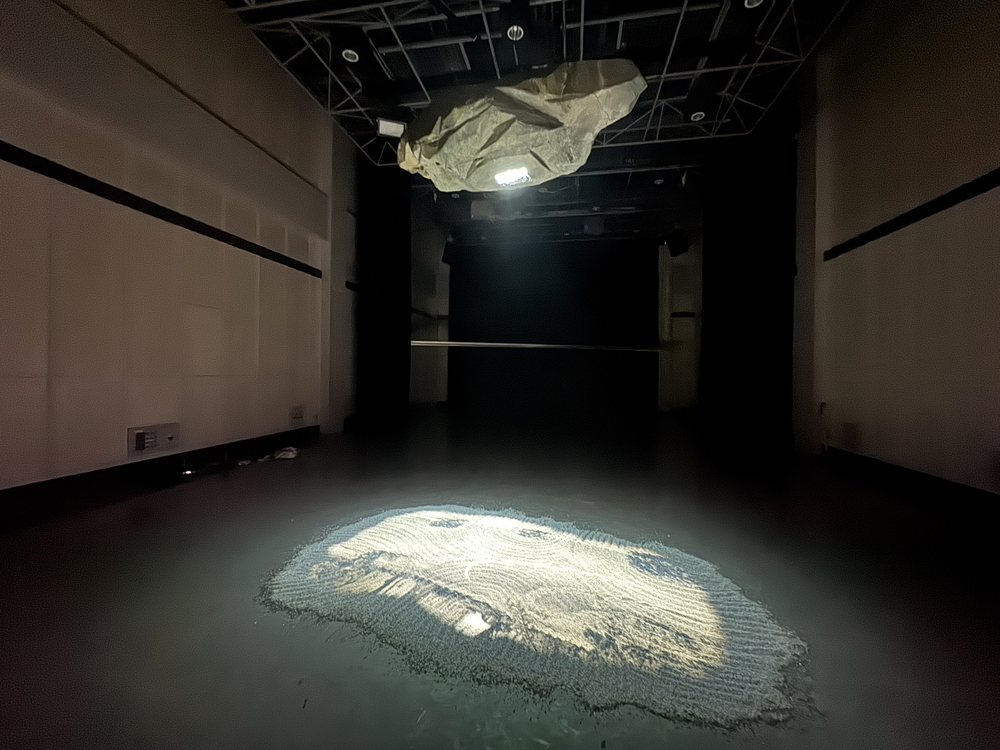

浮遊

素材 / Material
プロジェクター / ワイヤー / ネコ砂 / ウレタン / アクリル / Premiere Pro
制作年 / Year
2024 / 10
概要 / Description
時間は我々の望みに反して速く流れてしまう。 それは歳をとるほどより感覚的に速まっていくのだ。 我々は段々速まる時間に対して、時に違和感を覚える。自己を除いた全てが時間の流れに翻弄されている。 まるで自分だけが浮いているようなこの違和感を私たちは｢浮遊｣と命名することにした。 この作品は枯山水から着想を得ている。 岩は時間が経っても変わらない物、まるで時間の流れに追い付けず｢浮遊｣している我々に似ているかもしれない。 そして、砂は時間の流れと共に変化していく物。 私たちは岩(不変)から砂(流動)にタイムラプスの映像を照射し、｢浮遊｣の表現を試みた。 https://www.youtube.com/watch?app=desktop&v=F5L9hpcPSt8&feature=youtu.be